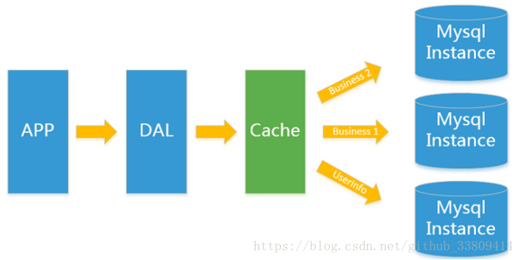
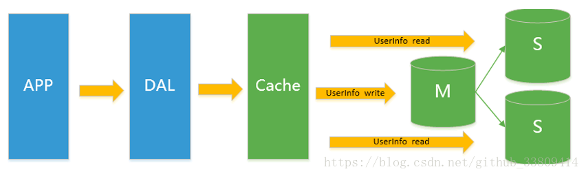
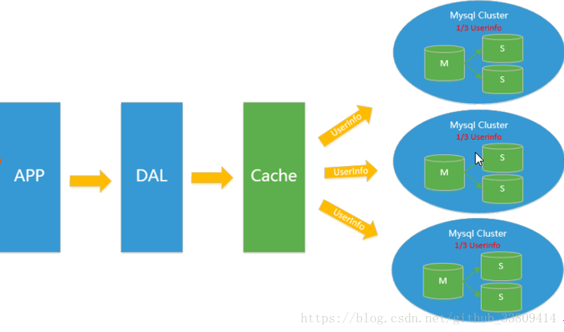
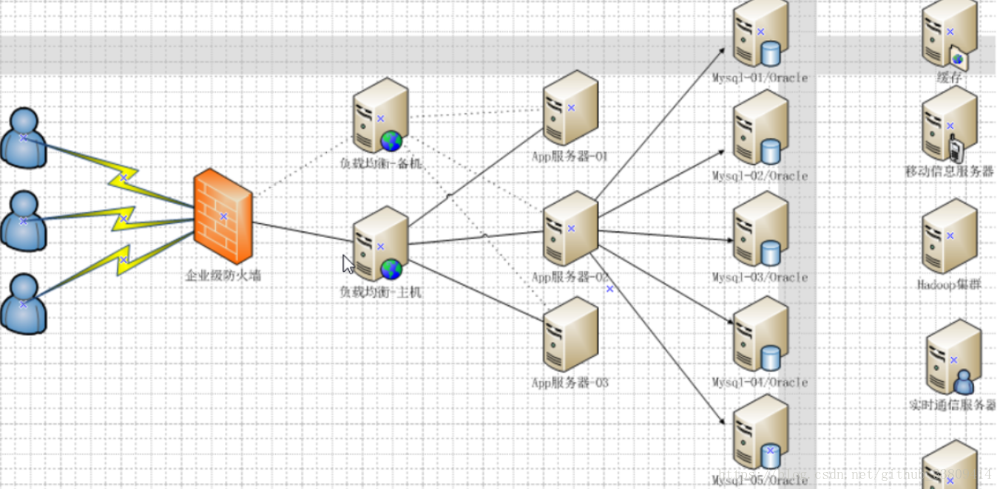

<!DOCTYPE html><html lang="en"><head><meta name="generator" content="Hexo 3.9.0"><meta charset="utf-8"><meta name="keywords" content="松林羊, ysl, songlinsheep, andus, blog, 个人站点, 个人网站"><meta name="description" content="松林羊的个人网站，用于记录，分享。欢迎交流^-^"><meta name="viewport" content="width=device-width,initial-scale=1,maximum-scale=1"><title> NoSQL概述 | 松林羊</title><link rel="shortcut icon" href="/smile.ico"><link rel="stylesheet" href="/css/style.css"><link rel="stylesheet" href="/fancybox/jquery.fancybox.min.css"><script src="/js/pace.min.js"></script><script>!function(e,t,o,c,i,a,n){e.DaoVoiceObject=i,e[i]=e[i]||function(){(e[i].q=e[i].q||[]).push(arguments)},e[i].l=1*new Date,a=t.createElement(o),n=t.getElementsByTagName(o)[0],a.async=1,a.src=c,a.charset="utf-8",n.parentNode.insertBefore(a,n)}(window,document,"script",("https:"==document.location.protocol?"https:":"http:")+"//widget.daovoice.io/widget/0f81ff2f.js","daovoice"),daovoice("init",{app_id:"1559132c"}),daovoice("update")</script></head></html><body><main class="content"><section class="outer"><article id="post-NoSQL概述" class="article article-type-post" itemscope itemprop="blogPost" data-scroll-reveal><div class="article-inner"><header class="article-header"><h1 class="article-title" itemprop="name"> NoSQL概述</h1></header><div class="article-meta"> <a href="/2019/06/30/NoSQL概述/" class="article-date"><time datetime="2019-06-30T08:44:02.000Z" itemprop="datePublished">2019-06-30</time></a><div class="article-category"> <a class="article-category-link" href="/categories/数据库/">数据库</a></div> &emsp;<i class="fe fe-bar-chart"></i> <span class="post-count">2.5k</span>字 &emsp;<i class="fe fe-clock"></i> <span class="post-count">8</span>分钟</div><div class="tocbot"></div><div class="article-entry" itemprop="articleBody"><h3 id="引言"><a href="#引言" class="headerlink" title="引言"></a>引言</h3><ul><li>随着互联网web2.0网站的兴起，传统的关系数据库在应付web2.0网站，特别是超大规模和高并发的SNS类型的web2.0纯动态网站已经显得力不从心，暴露了很多难以克服的问题，而非关系型的数据库则由于其本身的特点得到了非常迅速的发展。NoSQL数据库的产生就是为了<code>解决大规模数据集合多重数据种类</code>带来的挑战，尤其是大数据应用难题，包括超<code>大规模数据的存储</code>。(例如谷歌或Facebook每天为他们的用户收集万亿比特的数据)。这些类型的数据存储不需要固定的模式，无需多余操作就可以横向扩展。</li><li>如今天我们可以通过第三方平台（如：Google,Facebook等）可以很容易的访问和抓取数据。用户的个人信息，社交网络，地理位置，用户生成的数据和用户操作日志已经成倍的增加。我们如果要对这些用户数据进行挖掘，那SQL数据库已经不适合这些应用了, NoSQL数据库的发展也却能很好的处理这些大的数据。</li></ul><h3 id="是什么"><a href="#是什么" class="headerlink" title="是什么?"></a>是什么?</h3><ul><li>NoSQL(NoSQL = Not Only SQL )，意即”不仅仅是SQL”。泛指<code>非关系型的数据库</code>。是对不同于传统的关系型数据库的数据库管理系统的统称。</li></ul><h3 id="RDBMS-vs-NoSQL"><a href="#RDBMS-vs-NoSQL" class="headerlink" title="RDBMS vs NoSQL"></a><strong>RDBMS vs NoSQL</strong></h3><table><thead><tr><th>RDBMS(关系型)</th><th>NoSQL(非关系型)</th></tr></thead><tbody><tr><td>高度组织化结构化数据</td><td>代表着不仅仅是SQL</td></tr><tr><td>结构化查询语言（SQL）</td><td>没有声明性查询语言</td></tr><tr><td>数据和关系都存储在单独的表中</td><td>没有预定义的模式</td></tr><tr><td>数据操纵语言，数据定义语言</td><td>键 - 值对存储，列存储，文档存储，图形数据库</td></tr><tr><td>严格的一致性</td><td>最终一致性，而非ACID属性</td></tr><tr><td>基础事务</td><td>非结构化和不可预知的数据</td></tr><tr><td>&nbsp;</td><td>CAP定理</td></tr><tr><td>&nbsp;</td><td>高性能，高可用性和可伸缩性</td></tr></tbody></table><h3 id="CAP定理（CAP-theorem）"><a href="#CAP定理（CAP-theorem）" class="headerlink" title="CAP定理（CAP theorem）"></a><strong>CAP定理（CAP theorem）</strong></h3><ul><li>CAP定理（CAP theorem）, 又被称作<strong>布鲁尔定理</strong>（Brewer’s theorem）, 它指出对于一个分布式计算系统来说，不可能同时满足以下三点:<ul><li><strong>一致性</strong>(Consistency) (所有节点在同一时间具有相同的数据)</li><li><strong>可用性</strong>(Availability) (保证每个请求不管成功或者失败都有响应)</li><li><strong>分区容错性</strong>(Partition tolerance) (系统中任意信息的丢失或失败不会影响系统的继续运作)</li></ul></li><li>CAP理论的核心是：一个分布式系统不可能同时很好的满足一致性，可用性和分区容错性这三个需求，最多只能同时较好的<code>满足两个</code>。</li><li>因此，根据 CAP 原理将 NoSQL 数据库分成了满足 CA 原则、满足 CP 原则和满足 AP 原则三 大类：<ul><li><strong>CA - 单点集群</strong>，满足一致性，可用性的系统，通常在可扩展性上不太强大。</li><li><strong>CP - 满足一致性</strong>，分区容忍性的系统，通常性能不是特别高。</li><li><strong>AP - 满足可用性</strong>，分区容忍性的系统，通常可能对一致性要求低一些。<br><center>CAP theorem</center></li></ul></li></ul><h3 id="ACID-vs-BASE"><a href="#ACID-vs-BASE" class="headerlink" title="ACID vs BASE"></a><strong>ACID vs BASE</strong></h3><ul><li><strong>关系型数据库ACID规则</strong><ul><li>A(Atomicity) <strong>原子性</strong>：在事务里的所有操作要么全部做完，要么都不做，事务成功的条件是事务里的所有操作都成功，只要有一个操作失败，整个事务就失败，需要回滚。</li><li>C (Consistency) <strong>一致性</strong>：数据库要一直处于一致的状态，事务的运行不会改变数据库原本的一致性约束。</li><li>I (Isolation) <strong>独立性</strong>：并发的事务之间不会互相影响，如果一个事务要访问的数据正在被另外一个事务修改，只要另外一个事务未提交，它所访问的数据就不受未提交事务的影响。</li><li>D (Durability) <strong>持久性</strong>：事务提交后，它所做的修改将会永久的保存在数据库上，即使出现宕机也不会丢失。</li></ul></li><li><strong>非关系型数据库BASE思想</strong><ul><li>BASE：Basically Available, Soft-state, Eventually Consistent，是NoSQL数据库通常对可用性及一致性的弱要求原则:</li><li>Basically Availble –<strong>基本可用</strong></li><li>Soft-state –<strong>软状态/柔性事务</strong>。 “Soft state” 可以理解为”无连接”的, 而 “Hard state” 是”面向连接”的</li><li>Eventual Consistency – <strong>最终一致性</strong>， 也是是 ACID 的最终目的。</li></ul></li></ul><table><thead><tr><th>ACID</th><th>BASE</th></tr></thead><tbody><tr><td>原子性(Atomicity)</td><td>基本可用(Basically Available)</td></tr><tr><td>一致性(Consistency)</td><td>软状态/柔性事务(Soft state)</td></tr><tr><td>隔离性(Isolation)</td><td>最终一致性 (Eventual consistency)</td></tr><tr><td>持久性 (Durable)</td><td>&nbsp;</td></tr></tbody></table><h3 id="NoSQL数据库分类"><a href="#NoSQL数据库分类" class="headerlink" title="NoSQL数据库分类"></a><strong>NoSQL数据库分类</strong></h3><table><thead><tr><th>类型</th><th>部分代表</th><th>特点</th></tr></thead><tbody><tr><td>列存储</td><td>Hbase、Cassandra、Hypertable</td><td>顾名思义，是按列存储数据的。最大的特点是方便存储结构化和半结构化数据，方便做数据压缩，对针对某一列或者某几列的查询有非常大的IO优势。</td></tr><tr><td>文档存储</td><td>MongoDB、CouchDB</td><td>文档存储一般用类似json的格式存储，存储的内容是文档型的。这样也就有有机会对某些字段建立索引，实现关系数据库的某些功能。</td></tr><tr><td>key-value存储</td><td>Tokyo Cabinet / Tyrant、Berkeley DB、MemcacheDB、Redis</td><td>可以通过key快速查询到其value。一般来说，存储不管value的格式，照单全收。（Redis包含了其他功能）</td></tr><tr><td>图存储</td><td>Neo4J、FlockDB</td><td>图形关系的最佳存储(社交网络图、广告推荐系统)。使用传统关系数据库来解决的话性能低下，而且设计使用不方便。</td></tr><tr><td>对象存储</td><td>db4o、Versant</td><td>通过类似面向对象语言的语法操作数据库，通过对象的方式存取数据。</td></tr><tr><td>xml数据库</td><td>Berkeley DB XML、BaseX</td><td>高效的存储XML数据，并支持XML的内部查询语法，比如XQuery,Xpath。</td></tr></tbody></table><h3 id="附：架构大致演变历程"><a href="#附：架构大致演变历程" class="headerlink" title="附：架构大致演变历程"></a>附：<strong>架构大致演变历程</strong></h3><h4 id="1-单机MySQL时代"><a href="#1-单机MySQL时代" class="headerlink" title="1. 单机MySQL时代"></a><strong>1. 单机MySQL时代</strong></h4><ul><li>在90年代，一个网站的访问量一般都不大，用单个数据库完全可以轻松应付。<br>在那个时候，更多的都是静态网页，动态交互类型的网站不多。<br><center>单机MySQL 网站架构</center></li></ul><ul><li>上述架构下数据存储的瓶颈是什么？<ul><li>1.一个机器能存储数据量的总大小有限</li><li>2.数据库的索引与数据在同一个数据库，随着索引增加，效率反而降低</li><li>3.读写混合(在同一数据库实例)，并发有限</li></ul></li></ul><h4 id="2-Memcached-缓存-MySQL-垂直拆分"><a href="#2-Memcached-缓存-MySQL-垂直拆分" class="headerlink" title="2. Memcached(缓存)+MySQL+垂直拆分"></a><strong>2. Memcached(缓存)+MySQL+垂直拆分</strong></h4><ul><li>随着访问量的上升，几乎大部分使用MySQL架构的网站在数据库上都开始出现了性能问题，web程序不再仅仅专注在功能上，同时也在追求性能。程序员们开始大量的使用缓存技术来缓解数据库的压力，优化数据库的结构和索引。开始比较流行的是通过<code>文件缓存</code>来缓解数据库压力，但是当访问量继续增大的时候，多台web机器通过文件缓存不能共享，大量的小文件缓存也带了了比较高的IO压力。在这个时候，<code>Memcached</code>就自然的成为一个非常时尚的技术产品。<br><center>Memcached+MySQL+垂直拆分 网站架构</center></li></ul><ul><li><code>Memcached</code> 作为一个独立的<strong>分布式的</strong>缓存服务器，为多个web服务器提供了一个<strong>共享的、高性能</strong>缓存服务，在Memcached服务器上，又发展了根据hash算法来进行多台Memcached缓存服务的扩展，然后又出现了<code>一致性hash</code>来解决增加或减少缓存服务器导致重新hash带来的大量缓存失效的弊端。</li></ul><h4 id="3-MySQL主从读写分离"><a href="#3-MySQL主从读写分离" class="headerlink" title="3. MySQL主从读写分离"></a><strong>3. MySQL主从读写分离</strong></h4><ul><li>由于数据库的写入压力增加，Memcached只能缓解数据库的读取压力。读写集中在一个数据库上让数据库不堪重负，大部分网站开始使用<code>主从复制技术</code>来达到读写分离，以提高读写性能和读库的可扩展性。Mysql的master-slave模式成为这个时候的网站标配了。<br><center>MySQL主从读写分离 网站架构</center></li></ul><h4 id="4-分表分库-水平拆分-MySQL集群"><a href="#4-分表分库-水平拆分-MySQL集群" class="headerlink" title="4. 分表分库+水平拆分+MySQL集群"></a><strong>4. 分表分库+水平拆分+MySQL集群</strong></h4><ul><li>在Memcached的高速缓存，MySQL的主从复制，读写分离的基础之上，这时MySQL主库的写压力开始出现瓶颈，而数据量的持续猛增，由于MyISAM使用表锁，在高并发下会出现严重的锁问题，大量的高并发MySQL应用开始使用InnoDB(行锁)引擎代替MyISAM。</li><li>同时，开始流行使用<code>分表分库</code>来缓解写压力和数据增长的扩展问题。这个时候，分表分库成了一个热门技术，也就在这个时候，MySQL推出了还不太稳定的表分区。虽然MySQL推出了MySQL&nbsp;Cluster集群，但性能也不能很好满足互联网的要求，只是在高可靠性上提供了非常大的保证。<br><center>分表分库+水平拆分+MySQL集群 网站架构</center></li></ul><h4 id="5-MySQL的扩展性瓶颈"><a href="#5-MySQL的扩展性瓶颈" class="headerlink" title="5. MySQL的扩展性瓶颈"></a><strong>5. MySQL的扩展性瓶颈</strong></h4><ul><li>MySQL数据库也经常存储一些大文本字段，导致数据库表非常的大，在做数据库恢复的时候就导致非常的慢，不容易快速恢复数据库。比如1000万4KB大小的文本就接近40GB的大小，如果能把这些数据从MySQL省去，MySQL将变得非常的小。关系数据库很强大，但是它并不能很好的应付所有的应用场景。MySQL的扩展性差（需要复杂的技术来实现），大数据下IO压力大，表结构更改困难，正是当前使用MySQL的开发人员面临的问题。</li></ul><h4 id="6-今天是什么样子"><a href="#6-今天是什么样子" class="headerlink" title="6. 今天是什么样子"></a><strong>6. 今天是什么样子</strong></h4><p> </p><blockquote><p>致谢：</p><ol><li>尚硅谷-周阳老师的视频教程</li><li><a href="http://www.runoob.com/mongodb/nosql.html" target="_blank" rel="noopener">NoSQL 简介 | 菜鸟教程</a></li></ol></blockquote></div><footer class="article-footer"><ul class="article-tag-list"><li class="article-tag-list-item"><a class="article-tag-list-link" href="/tags/NoSQL/">NoSQL</a></li></ul><div style="text-align:center;color:#ccc;font-size:14px;margin-top:10px"> ------------- 本文结束&nbsp;<i class="fe fe-smile"></i>&nbsp;感谢您的阅读 -------------</div></footer></div><nav class="article-nav"> <a href="/2019/06/30/Redis-一-安装-HelloWorld/" class="article-nav-link"><strong class="article-nav-caption">前一篇</strong><div class="article-nav-title"> Redis(一)-安装+HelloWorld</div></a> <a href="/2019/06/27/Maven简记/" class="article-nav-link"><strong class="article-nav-caption">后一篇</strong><div class="article-nav-title">Maven简记</div></a></nav><div class="comment_headling" style="margin-top:5rem"><font size="5"><i class="fe fe-comments"></i> 评论</font></div><div class="comment"></div><script src="https://cdn1.lncld.net/static/js/3.0.4/av-min.js"></script><script src="/js/Valine.min.js"></script><script type="text/javascript">GUEST_INFO=["nick","mail","link"],guest_info="nick,mail,link".split(",").filter(function(i){return-1<GUEST_INFO.indexOf(i)}),guest_info=0==guest_info.length?GUEST_INFO:guest_info,new Valine({av:AV,el:".comment",app_id:"fq4O7Xaf1cYDbADGellNEn6V-gzGzoHsz",app_key:"a626rNIHkVVk8tGBBCfaQjb9",placeholder:"记得留下你的昵称和邮箱...可以快速收到回复ヾﾉ≧∀≦)o",meta:guest_info,notify:!0,verify:!1,avatar:"monsterid",recordIP:!0,visitor:!1,lang:"zh-cn"})</script></article></section><footer class="footer"><div class="outer"><ul class="list-inline"><li>&copy; 2019-2019 松林羊</li><li>Theme <a href="https://github.com/zhwangart/hexo-theme-ocean">Ocean</a></li><ul class="list-inline"><li><i class="fe fe-smile-alt"></i> 访客数&nbsp;<span id="busuanzi_value_site_uv"></span></li><li><i class="fe fe-bookmark"></i> 文章访问量&nbsp;<span id="busuanzi_value_page_pv"></span></li></ul></ul><ul class="list-inline"><li>已分享 45 篇博文，累计 <span class="post-count">46.7k</span> 字</li><ul class="list-inline"><li><span id="timeDate">载入天数...</span><span id="times">载入时分秒...</span></li></ul><script>var now=new Date;function createtime(){var n=new Date("07/28/2019 10:02:00");now.setTime(now.getTime()+250),days=(now-n)/1e3/60/60/24,dnum=Math.floor(days),hours=(now-n)/1e3/60/60-24*dnum,hnum=Math.floor(hours),1==String(hnum).length&&(hnum="0"+hnum),minutes=(now-n)/1e3/60-1440*dnum-60*hnum,mnum=Math.floor(minutes),1==String(mnum).length&&(mnum="0"+mnum),seconds=(now-n)/1e3-86400*dnum-3600*hnum-60*mnum,snum=Math.round(seconds),1==String(snum).length&&(snum="0"+snum),document.getElementById("timeDate").innerHTML="已等候你 "+dnum+" 天 ",document.getElementById("times").innerHTML=hnum+" 小时 "+mnum+" 分 "+snum+" 秒"}setInterval("createtime()",250)</script></ul></div></footer></main><aside class="sidebar sidebar-specter"> <button class="navbar-toggle"></button><nav class="navbar"><div class="logo"> <a href="/"></a></div><ul class="nav nav-main"><li class="nav-item"> <a class="nav-item-link" href="/" target="_self">主页</a></li><li class="nav-item"> <a class="nav-item-link" href="/archives" target="_self">归档</a></li><li class="nav-item"> <a class="nav-item-link" href="/categories" target="_self">分类</a></li><li class="nav-item"> <a class="nav-item-link" href="/tags" target="_self">标签</a></li><li class="nav-item"> <a class="nav-item-link" href="/links" target="_self">友链</a></li><li class="nav-item"> <a class="nav-item-link">综合</a><ul class="nav nav-main nav2"><li class="nav-item li2"> <a class="nav-item-link-child" href="/resource" target="_self">资 源</a></li><li class="nav-item li2"> <a class="nav-item-link-child" href="/site" target="_self">网 站</a></li></ul></li><li class="nav-item"> <a class="nav-item-link">关于</a><ul class="nav nav-main nav2"><li class="nav-item li2"> <a class="nav-item-link-child" href="/me" target="_self">博 主</a></li><li class="nav-item li2"> <a class="nav-item-link-child" href="http://stars.andus.top/" target="_blank">记 录</a></li><li class="nav-item li2"> <a class="nav-item-link-child" href="/plan" target="_self">计 划</a></li></ul></li><li class="nav-item"> <a class="nav-item-link" href="http://resume.andus.top/" target="_blank">简 历</a></li><li class="nav-item"><a class="nav-item-link nav-item-search" title="搜索"><i class="fe fe-search"></i> 搜索</a></li></ul></nav><nav class="navbar navbar-bottom"><ul class="nav"><li class="nav-item"><div class="totop" id="totop"><i class="fe fe-rocket"></i></div></li><li class="nav-item"></li></ul></nav><div class="search-form-wrap"><div class="local-search local-search-plugin"> <input type="search" id="local-search-input" class="local-search-input" placeholder="Search..."><div id="local-search-result" class="local-search-result"></div></div></div></aside><script src="/js/jquery-2.0.3.min.js"></script><script src="/js/jquery.justifiedGallery.min.js"></script><script src="/js/lazyload.min.js"></script><script src="/js/busuanzi-2.3.pure.min.js"></script><script src="/fancybox/jquery.fancybox.min.js"></script><script src="/js/tocbot.min.js"></script><script>900<=document.body.clientWidth&&tocbot.init({tocSelector:".tocbot",contentSelector:".article-entry",headingSelector:"h1, h2, h3, h4, h5, h6",hasInnerContainers:!0,scrollSmooth:!0,positionFixedSelector:".tocbot",positionFixedClass:"is-position-fixed",fixedSidebarOffset:"auto"})</script><script src="/js/ocean.js"></script><script src="/js/andus.js"></script><script src="/js/love.js"></script><script>$("img:not(#andus-head-img)").each(function(){$(this).wrap('<a class="fancybox" data-fancybox="gallery" href="'+$(this).prop("src")+'"></a>')})</script><script src="/live2dw/lib/L2Dwidget.min.js?094cbace49a39548bed64abff5988b05"></script><script>L2Dwidget.init({model:{scale:1,hHeadPos:.5,vHeadPos:.618,jsonPath:"/live2dw/assets/haruto.model.json"},display:{superSample:2,width:150,height:300,position:"left",hOffset:0,vOffset:-20},mobile:{show:!1},react:{opacityDefault:.5,opacityOnHover:.2},log:!1,pluginJsPath:"lib/",pluginModelPath:"assets/",pluginRootPath:"live2dw/",tagMode:!1})</script></body>